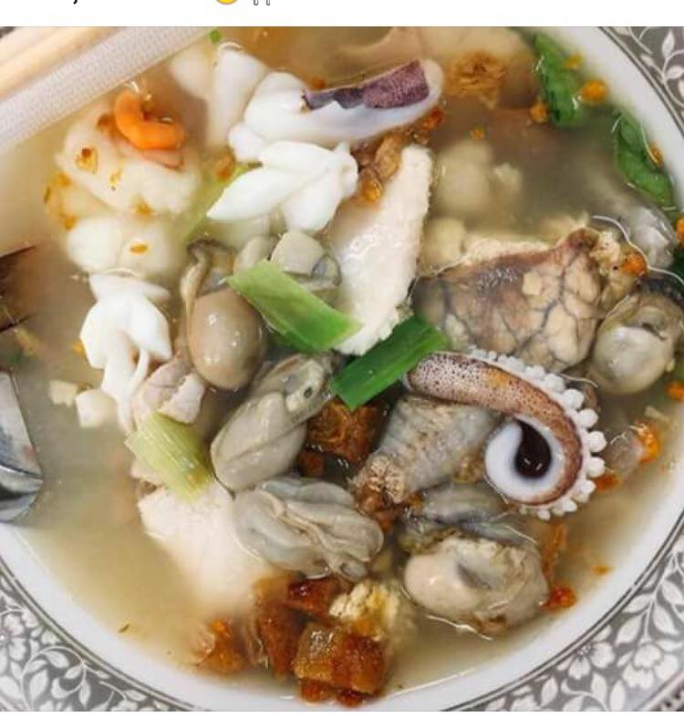

 ข้าวต้มปลา (กิมโป้) ถ้าพูดถึงข้าวต้มปลา .. หลายคนต้องนึกถึง " ร้านข้าวต้มปลา (กิมโป้)" เเน่นอน เพราะร้านนี้เป็นร้านเด็ดเจ้าอร่อยที่มีชื่อเสียงมายาวนานเป็นตำนานกว่า 70 ปี จุดเด่นของร้านที่ทำให้ร้านเป็นที่รู้จักคือ ข้าวต้มของร้านต้มจนนุ่ม น้ำซุปหอมกลมกล่อม เนื้อปลาถูกลวกจัดเตรียมด้วยความพีถีพิถันมากๆ จนไม่มีกลิ่นคาวหลงเหลือเลย เเถมทางร้านจะนำวัตถุดิบสดๆ ใหม่ๆ ทั้งปลาเต๋าเต้ย ปลาจาระเม็ด ปลาหมอ ปลาเก๋า ปลากุเลา ปลาหมึก กุ้ง ฯลฯ นำมาเเขวนให้เห็นกันชัดๆ เลยว่าสดเเค่ไหน ราคาเริ่มต้น 150-300 บาท